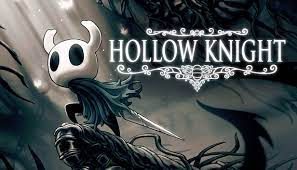

Games That Are Sick Nasty

Hollow Knight is a goooooooood game. My favorite. You play as the mysterious knight who ventures into the dead kingdom of Hollownest where an infection has taken over most of the populace. The Knight explores the kingdom and fights various foes in this masterpiece of a Metroidvania.
Dark Souls is widely considered to be a contender for the best of all time. To be honest this game is not that, its like a classic experience where most of it is boring, a slog, and frankly just plain bad. But the moments when its good, it becomes simply the best game of all time. Theres a reason people love this game and its a testament to how good it is that people are ok with how atrociously bad parts of the game are, play it.